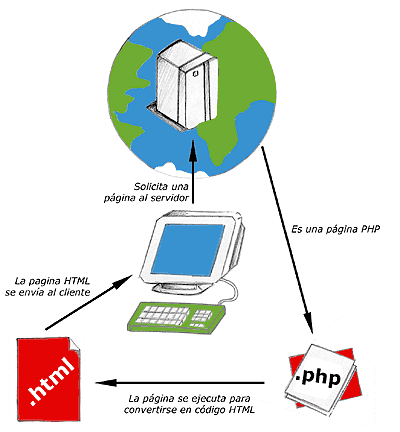

|
¿Que es php?
“Hypertext Pre-Processor”
PHP son las siglas en inglés de “Hypertext Pre-Processor” que al traducirlo al español pierde un poco el sentido, mejor lo analizamos y encontramos que significa “Lenguaje de Programación Interpretado”. Este lenguaje es al que le debemos la visualización de contenido dinámico en las páginas web.
|
|  |
Una vez que ya conocemos el concepto de lenguaje de programación de scripts del lado del servidor podemos hablar de PHP. PHP se escribe dentro del código HTML, lo que lo hace realmente fácil de utilizar, al igual que ocurre con el popular ASP de Microsoft, pero con algunas ventajas como su gratuidad, independencia de plataforma, rapidez y seguridad. Cualquiera puede descargar a través de la página principal de PHP www.php.net y de manera gratuita
|
|